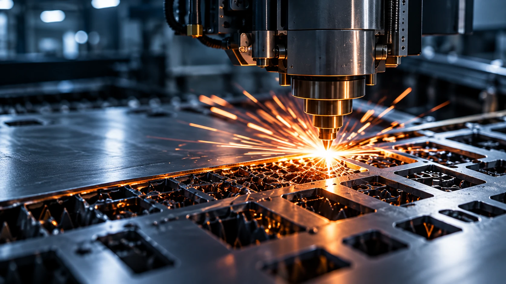
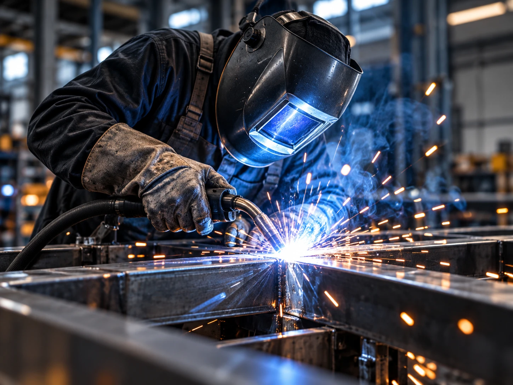
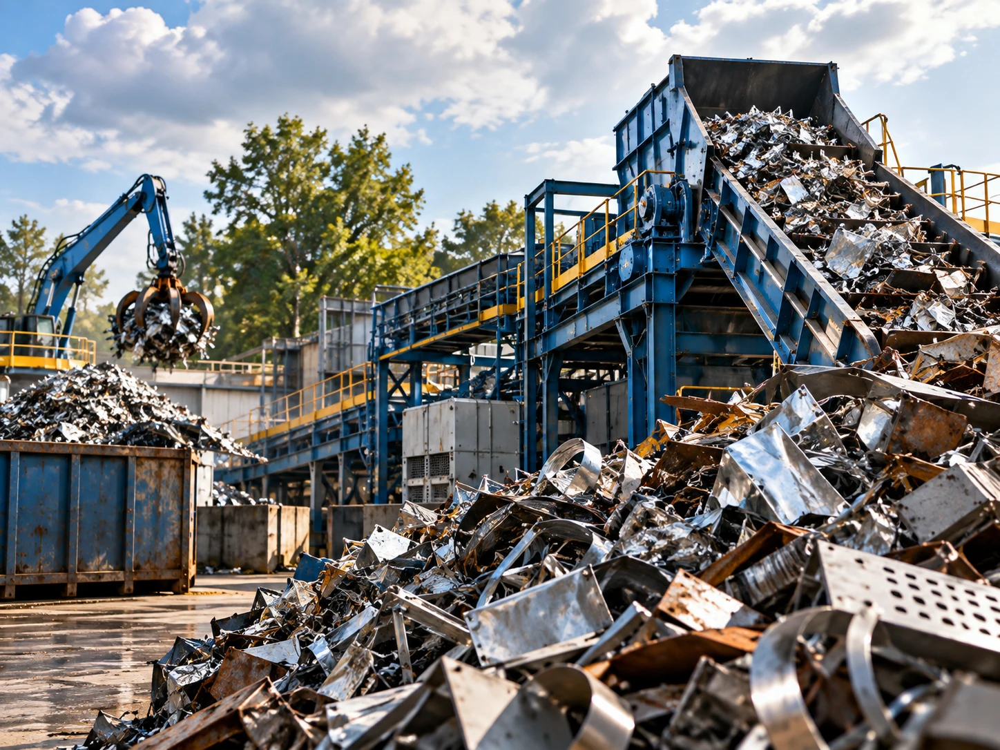
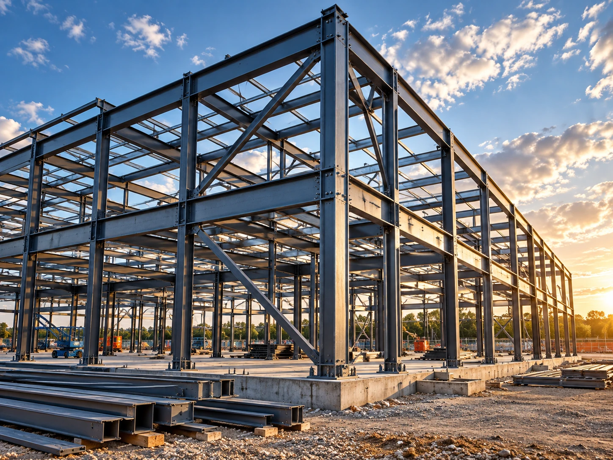
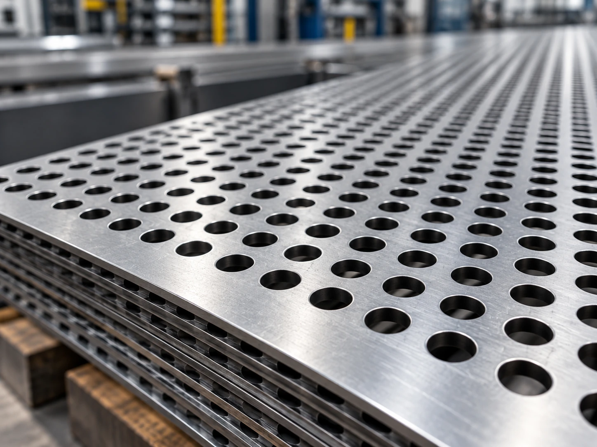
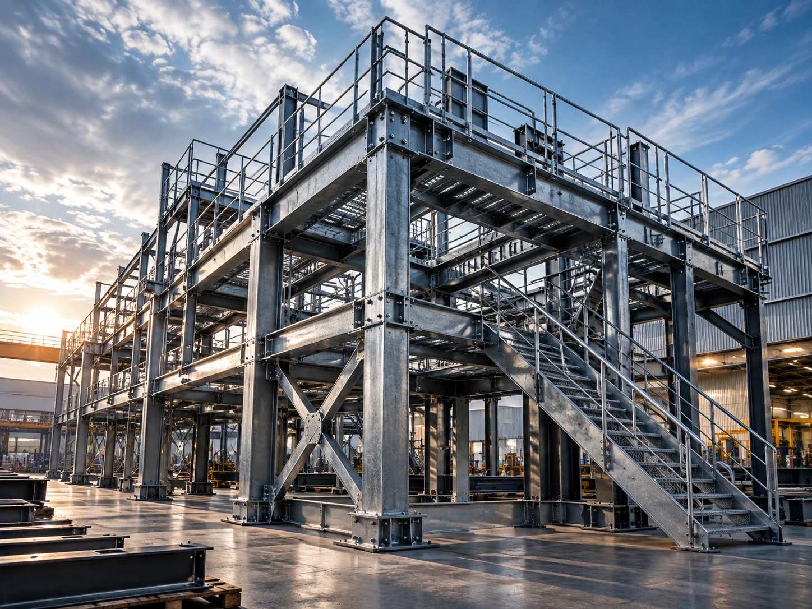

ENGINEERING THE
NEXT INDUSTRIAL ERA
Advanced metal fabrication powered by precision machinery, digital workflows and Sheffield engineering. From single components to production-scale fabricated systems.

NEXT-GENERATION METAL
FABRICATION FOR INDUSTRY
Digital precision meets Sheffield engineering. Advanced cutting, forming, welding and fabricated systems engineered for repeatability, performance and the next generation of industry.

6KW FIBRE LASER CUTTING
High-speed digital profiling for complex steel components, repeat production and ultra-clean geometry.
→
CNC PRESS BRAKE FOLDING
Programmed forming for repeatable angles, complex profiles and high-accuracy fabricated parts.
→
WELDING & FABRICATION
MIG, TIG and specialist joining for structural strength, clean finishes and production-ready assemblies.
→
PERFORATED METAL SYSTEMS
Precision perforation for screens, panels, filtration, ventilation and demanding industrial applications.
→
BESPOKE FABRICATION
Custom engineered metalwork for specialist equipment, structures and one-off manufacturing challenges.
→TRUSTED PARTNER
ACROSS KEY SECTORS
Metal fabrication solutions designed around the quality, durability and performance requirements of industrial customers.

Manufacturing
Recycling
Construction
Agriculture
ArchitecturalTURNING IDEAS INTO REALITY
From architectural metalwork to industrial equipment, Parkway delivers bespoke fabrication tailored to project requirements. Our experience and capabilities support projects from prototype through to finished installation.
- One-off prototypes to repeat production
- Steel, stainless steel and aluminium fabrication
- Project support from concept through manufacture
OUR WORK
Representative fabrication categories showcasing the breadth of Parkway's manufacturing capabilities.
Industrial Equipment
Bespoke fabrication
Safety Cages
Manufacture and installation
Staircases & Walkways
Architectural metalwork
Custom Components
Precision fabrication

Granulator Screens
Perforated sheet manufacture
Structural Work
Large-scale fabrication
SHEFFIELD-BORN.
INDUSTRY-READY.
Parkway Fabrications is based in Sheffield, at the heart of the UK's steel and engineering heritage. The company's current website describes a skilled workforce with nearly 100 years of combined metal fabrication and manufacturing experience.
Discover Parkway →4 Colwall Street, Sheffield, S9 3WP
Precision manufacturing from Sheffield for projects across the UK and internationally.
Open in Google Maps →ENGINEERED WITH
CONTROL & TRACEABILITY.
Parkway's current welding information states that its team includes EN1090 coded welders and that every weld receives a 100% post-weld quality check to meet ISO standards.
EN1090 CODED WELDERS
Publicly stated on Parkway's current welding page.
100% POST-WELD CHECKS
Dimensional accuracy and finish checks are described as part of the welding process.
ISO-STANDARD QUALITY CHECKS
Parkway states its post-weld inspections are carried out to meet ISO standards.
READY TO DISCUSS YOUR NEXT PROJECT?
Send your drawings, specification or requirements and speak to the Parkway team.